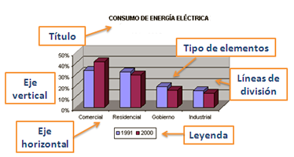

5.1. Elementos
Para crear un gráfico en una hoja de cálculo es necesario conocer los elementos que van a aparecer en dicho gráfico. Estos elementos pueden ser editados, modificados y redimensionados una vez creado el gráfico.
El siguiente ejemplo es un tipo de gráfico concreto y en él se pueden apreciar los principales elementos de un gráfico, aunque pueden variar de un tipo a otro. Pero antes de comenzar a estudiarlos, vamos a definir los datos que van a aparecer en el gráfico.
Importante
Se llama serie al conjunto de datos de la misma naturaleza que se reflejan en un gráfico. En un gráfico puede haber varias series: en el eje X se representan las categorías y en el eje Y los datos.
|
 |
Ejercicio Resuelto
En la siguiente tabla, encontrarás las combinaciones de teclas de acceso rápido dentro de los gráficos.
Comprueba lo aprendido
Obra publicada con Licencia Creative Commons Reconocimiento No comercial Compartir igual 4.0